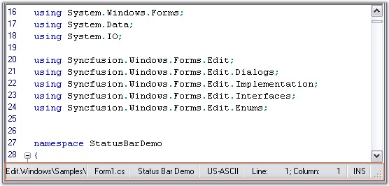

Essential Edit provides support to include a built-in Status Bar at the bottom of the control with different panels displaying different information. The built-in panels are as follows.
· TextPanel
· StatusPanel
· EncodingPanel
· FileNamePanel
· CoordsPanel
· InsertPanel

Figure 73: Status Bar and Status Bar Panels in Edit Control
In addition to the above information, any custom text can also be displayed in the Status Bar Panels.
Status Bar Settings
The StatusBarSettings property consists of the below given sub properties, which can be used to customize the appearance and visibility of the status bar and its panels.
|
StatusBarSettings Property |
Description |
|
TextPanel |
Specifies StatusBaPanelSettings object for Text panel. |
|
StatusPanel |
Specifies StatusBaPanelSettings object for Status panel. |
|
EncodingPanel |
Specifies StatusBaPanelSettings object for Encoding panel. |
|
FileNamePanel |
Specifies StatusBaPanelSettings object for FileName panel. |
|
CoordsPanel |
Specifies StatusBaPanelSettings object for Coords panel. |
|
InsertPanel |
Specifies StatusBaPanelSettings object for Insert panel. |
|
Panels |
Gets the list of status bar panels settings. |
|
StatusBar |
Gets underlying status bar. |
|
GripVisibility |
Gets / sets visibility of status bar sizing grip. The options provided are as follows:
· Smart · Visible · Hidden |
|
[C#]
// Set the visibility of the statusbar sizing grip. this.editControl1.StatusBarSettings.GripVisibility = Syncfusion.Windows.Forms.Edit.Enums.SizingGripVisibility.Visible; |
|
[VB.NET]
' Set the visibility of the statusbar sizing grip. Me.editControl1.StatusBarSettings.GripVisibility = Syncfusion.Windows.Forms.Edit.Enums.SizingGripVisibility.Visible |
Figure 74: Sizing Gripper in the Status Bar
Visibility Settings
The StatusBar feature in Edit Control can be turned on by setting the StatusBarSettings.Visible property to True. By default, this property is set to False. The individual Status Bar Panels can be optionally shown / hidden by using the Visible property corresponding to the respective panel.
|
[C#]
this.editControl1.StatusBarSettings.GripVisibility = Syncfusion.Windows.Forms.Edit.Enums.SizingGripVisibility.Visible;
// Shows the built-in statusbar. this.editControl1.StatusBarSettings.Visible = true;
// Enable the TextPanel in the StatusBar. this.editControl1.StatusBarSettings.TextPanel.Visible = true; |
|
[VB.NET]
Me.editControl1.StatusBarSettings.GripVisibility = Syncfusion.Windows.Forms.Edit.Enums.SizingGripVisibility.Visible
// Shows the built-in statusbar. Me.editControl1.StatusBarSettings.Visible = True
' Enable the TextPanel in the StatusBar. Me.editControl1.StatusBarSettings.TextPanel.Visible = True |
A sample which demonstrates the StatusBar feature is available in the below sample installation path.
..\My Documents\Syncfusion\EssentialStudio\Version Number\Windows\Edit.Windows\Samples\2.0\Advanced Editor Functions\StatusBarDemo